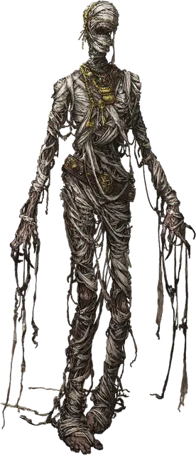

Мумия
Mummy
Средняя Нежить, законно-злая

Класс Доспеха 11 (природный доспех)
Хиты 58 (9к8 + 18)
Скорость 20 футов
| мод | спас | ||
|---|---|---|---|
| СИЛ | 16 | +3 | +3 |
| ЛОВ | 8 | −1 | −1 |
| ТЕЛ | 15 | +2 | +2 |
| мод | спас | ||
|---|---|---|---|
| ИНТ | 6 | −2 | −2 |
| МДР | 10 | +0 | +2 |
| ХАР | 12 | +1 | +1 |
Уязвимость к урону огонь
Сопротивление урону дробящий, колющий, рубящий от немагических атак
Иммунитет к урону некротическая энергия, яд
Иммунитет к состояниям паралич, очарование, отравление, истощение, испуг
Чувства тёмное зрение 60 футов, пассивное Восприятие 10
Языки все, известные при жизни
Опасность 3 (700 опыта)
Бонус мастерства +2
Среда обитания Пустыня
Действия
Мультиатака. Мумия может использовать Ужасающий взгляд и совершить одну атаку Разлагающим кулаком.
Разлагающий кулак. Рукопашная атака оружием: +5 к попаданию, досягаемость 5 футов, одна цель. Попадание: 10 (2к6 + 3) дробящего урона плюс 10 (3к6) урона некротической энергией. Если цель — существо, она должна преуспеть в спасброске Телосложения Сл 12, иначе станет проклятой гнилью мумии. Проклятая цель не может восстанавливать хиты, и её максимум хитов уменьшается на 10 (3к6) за каждые прошедшие 24 часа. Если проклятие уменьшает максимум хитов цели до 0, цель умирает, а её тело становится прахом. Проклятие длится до тех пор, пока не будет снято заклинанием снятие проклятия [remove curse] или другой магией.
Ужасающий взгляд. Мумия нацеливается на одно существо, которое видит в пределах 60 футов. Если цель видит мумию, она должна преуспеть в спасброске Мудрости Сл 11 от этой магии, иначе станет испуганной до конца следующего хода мумии. Если цель проваливает спасбросок на 5 и более единиц, она также становится парализованной на тот же период. Цель, преуспевшая в спасброске, на следующие 24 часа получает иммунитет к Ужасающему взгляду всех мумий (но не лордов-мумий [mummy lord]).
Описание
Поднятые тёмными погребальными ритуалами, мумии, ковыляя, выходят из мертвенно-неподвижного храма или гробницы. Пробуждённая от своего покоя мумия карает пришельцев нечестивым проклятием.
См. дополнительно статью: «Бестиарий: Мумии»